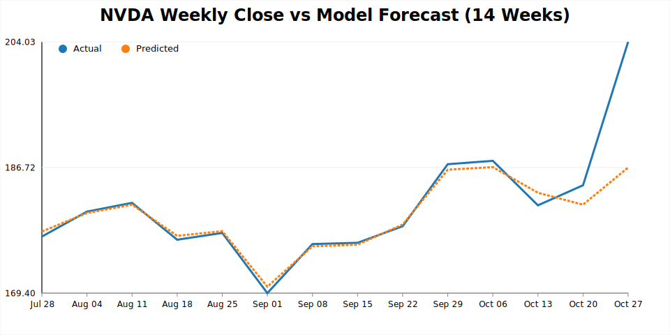
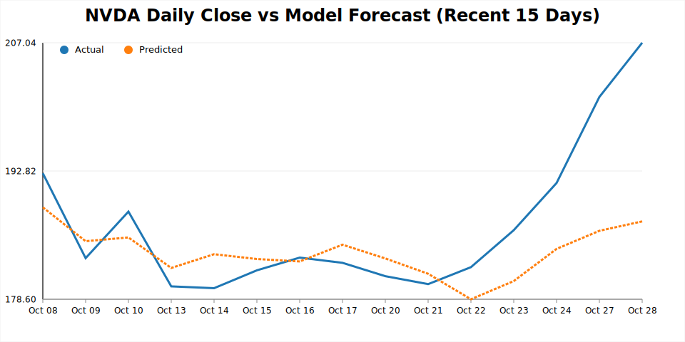

Screenshots


Motivation
I wanted to move beyond pure price-based models and ask: how much can carefully curated market news improve next-day forecasts? This project merges traditional technical indicators with granular sentiment features to keep the pipeline explainable, reproducible, and update-ready.
Key Results (28 Oct 2025)
| Window | RMSE | MAE | MAPE | R² | Directional Accuracy |
|---|---|---|---|---|---|
| Test (daily) | 8.18 | 5.61 | 2.87% | 0.12 | 100% |
Pipeline Highlights
- Aggregates Yahoo Finance OHLCV data, Alpha Vantage news sentiment, and optional FRED macro rates.
- Feature engineering blends lagged returns, RSI/MACD, Bollinger ranges, SPY-relative spreads, and rolling sentiment deltas.
- Chronological split (70/15/15) feeds a grid search over Random Forest & Gradient Boosting regressors.
- Selected model (Random Forest) refit on train+validation and exported for reproducible predictions.
- Automated reports include metrics JSON, CSV snapshots, and interactive Plotly dashboards in `reports/`.
What I Learned
- Fine-tuning sentiment windows is critical — too long causes drift, too short ignores context.
- Maintaining deterministic pipelines (config-driven, versioned artefacts) speeds up stakeholder reviews.
- Direction-of-move accuracy can outperform raw error metrics when aligning with trading decisions.